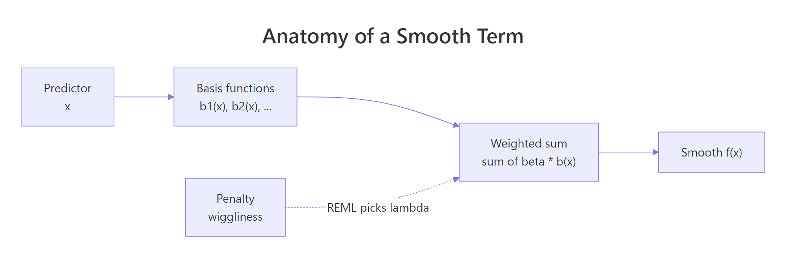
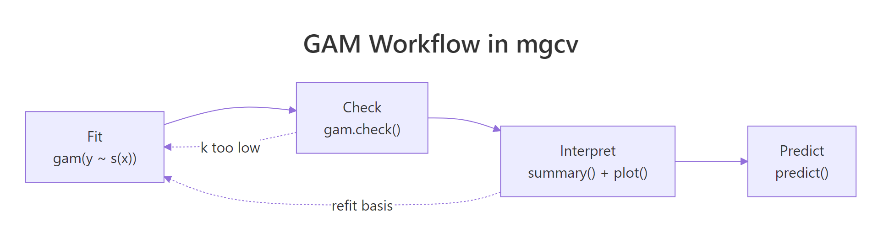

GAM in R: Generalized Additive Models with mgcv, Smooth Nonlinear Effects
A generalized additive model (GAM) fits flexible nonlinear effects as a sum of smooth functions, letting the data decide how wiggly each predictor's effect should be. In R, the mgcv package makes this a one-line change from lm().
What makes a GAM different from polynomial regression?
Linear regression forces every predictor into a straight line. Polynomial terms help, but you have to pick the degree, and high-order terms wiggle unpredictably at the edges. A GAM sidesteps both problems: you write s(x) instead of x, and mgcv automatically picks how smooth that effect should be. The payoff below fits Ozone as a smooth function of Temp on the built-in airquality dataset.
Three numbers tell the story. edf = 3.69 means the fitted effect is about as complex as a degree-3 polynomial, far from a straight line. p-value ~ 1e-15 says the smooth is overwhelmingly significant. The plot (a runnable cell renders it) shows Ozone rising gently at low temperatures and sharply above about 80 degrees, exactly the kind of curve a linear fit would miss.
s(x). The package picks how wiggly that smooth should be by penalising curvature and tuning the penalty with REML. No degree to guess, no knot placement to fuss over.Compare the GAM against a plain linear fit to see the gap.
The GAM cuts AIC by about 26 points and explains 61% of deviance versus 49% for the linear fit. That gap is the whole pitch for GAMs: same one-line formula change, meaningfully better fit whenever the relationship is curved.
Try it: Fit a GAM of Ozone as a smooth of Wind. Save it as ex_m1 and print the smooth's edf and p-value.
Click to reveal solution
Explanation: s(Wind) tells mgcv to fit a smooth function of Wind. REML selects the penalty. The edf of about 2.6 says the relationship is mildly curved, and the tiny p-value confirms the effect is real.
How do you fit a simple GAM with gam() and s()?
The s() function accepts two arguments worth knowing early. k is the basis dimension, an upper bound on how wiggly the smooth can get (default 10). bs selects the spline family: "tp" (thin-plate, the default), "cr" (cubic regression, faster for large data), and "cs" (shrinkage variant that can penalise a smooth out of the model entirely). The smoothing penalty, not k, decides the final wiggliness, so you rarely need to touch k unless a check later complains.
Both bases land on almost the same effective wiggliness (edf ~ 3.7). For a one-predictor model on a small dataset the choice barely matters. Cubic regression splines become faster once you have tens of thousands of rows, and thin-plate splines work in any number of dimensions, so default to "tp" and switch to "cr" only if fitting time becomes painful.
Additive means you just add more smooths. Each predictor gets its own s(), and mgcv estimates the whole stack jointly.
Three smooths, three p-values, three different shapes, all fitted in one call. The edfs tell you each predictor's effect is curved but not pathologically so.
method = "REML", not the default GCV. Restricted maximum likelihood gives more stable smoothing-parameter estimates and is less likely to undersmooth noisy data. It is the recommended default from the mgcv author, Simon Wood.Try it: Fit Ozone ~ s(Temp) + s(Wind) + s(Solar.R) with REML, save as ex_m3, then simply print ex_m3 (not summary) to see the printed edfs.
Click to reveal solution
Explanation: Printing a gam object (without summary()) gives a compact readout: the formula, the per-smooth edfs, and the REML score used for fitting.
How do you read a GAM's summary and smooth plots?
summary() prints two tables. The first is parametric: the intercept and any linear terms you added. The second, Approximate significance of smooth terms, has one row per smooth with four columns: edf, Ref.df, F, and p-value. The edf is the one to know by heart: it is the effective degrees of freedom, how many "knobs" the penalised fit used. An edf of 1 means the smooth collapsed to a straight line. An edf near the basis dimension k means the smooth hit its ceiling, a signal to rerun with higher k.
Read this top down. The intercept is the mean Ozone after the smooths are centered (mgcv centers each smooth, so they pass through zero on average). Each smooth-term row asks: is this smooth different from a flat line? All three p-values say yes. The model explains 75% of deviance, a strong fit.
Pictures tell the rest of the story. plot.gam() draws one partial-effect plot per smooth, with a shaded confidence band.
Each panel shows one smooth's partial effect: how Ozone changes as that predictor moves, holding the others at their average. The shaded band is a 95% pointwise confidence interval. seWithMean = TRUE adds the intercept uncertainty into the band, which is what you almost always want.

Figure 1: How mgcv builds a smooth: basis functions combine into a weighted sum, with a penalty shrinking wiggliness.
seWithMean = TRUE in plot.gam(). Without it, the confidence band only reflects uncertainty in the smooth, not in the intercept, and tends to underrepresent true uncertainty. Setting it to TRUE makes the band more honest.Try it: Pull the edf of the Wind smooth from summary(ex_m3). Then look at the value and decide: is the Wind effect nearly linear (edf ~ 1) or clearly nonlinear (edf > 2)?
Click to reveal solution
Explanation: summary(model)$s.table is a matrix indexed by smooth name. An edf of about 2.4 is well above 1, so the Wind effect is clearly nonlinear, but not wildly wiggly.
How do you model interactions with te() and ti()?
When two predictors interact, a single additive smooth per variable is not enough. mgcv gives you three ways to fit a joint surface, and picking the right one matters.
s(x1, x2) is a two-dimensional thin-plate smooth. It assumes x1 and x2 share a scale, so it is only appropriate for things like longitude and latitude. te(x1, x2) is a tensor product smooth built from two one-dimensional bases; it is scale-invariant, so use it whenever the two predictors have different units (temperature and wind speed, for instance). ti(x1, x2) is the "pure" interaction: it strips out the main effects, letting you write s(x1) + s(x2) + ti(x1, x2) and read off the interaction separately.
The single smooth te(Temp, Wind) uses about 7.3 edfs to trace a curved 2D surface. scheme = 2 draws the surface as a heatmap with contour lines. High Ozone sits in the hot-and-calm corner (high Temp, low Wind), and the surface curves rather than going diagonal, which is the interaction.
te(), not s(), for different-scale predictors. s(Temp, Wind) forces Temp (in Fahrenheit) and Wind (in mph) onto the same penalty scale, distorting the fit. te() uses a separate smoothing parameter per marginal, so the basis adapts to each predictor's scale independently.Decomposing into main effects plus a pure interaction often reads more cleanly.
Now you can see three things at once: Temp and Wind each have substantial main effects (edf > 2, tiny p-values), and the pure interaction ti(Temp, Wind) is weak (edf ~ 0.9, p = 0.06). A model with main effects alone would likely be enough for airquality.
Try it: Fit a tensor product interaction of Temp and Solar.R, save it as ex_te. Print the smooth table and see how many edfs the joint surface uses.
Click to reveal solution
Explanation: The tensor product uses about 6 edfs to draw the 2D response surface. Because Temp and Solar.R are on different scales (Fahrenheit vs. Langleys), te() is the correct choice, not s(Temp, Solar.R).
How do you check a GAM and fix overfitting?
gam.check() is the diagnostic workhorse. It does four things in one call: plots residual diagnostics, prints a basis-dimension check, reports convergence, and gives you back something you can read top-to-bottom. The key line is the basis-check table near the bottom: it reports k' (the basis size), edf, a k-index, and a p-value. If the p-value is small, your smooth is pushing against the edge of its basis and you should refit with a larger k.
Three things to scan. First, "full convergence" at the top: REML converged, good. Second, the k-check table: all k-index values are near 1 and all p-values are above 0.05, so no smooth is basis-limited. Third, the diagnostic plot panel shows a QQ plot, a residuals vs. linear-predictor scatter, a residual histogram, and response vs. fitted. You want the QQ points roughly on the line and the residuals evenly scattered.
Concurvity is the GAM analogue of multicollinearity. Two smooths may each be significant on their own but effectively represent the same information, inflating uncertainty. concurvity() reports this.
Values near 1 flag serious problems; here all three smooths land well under 0.6, so the joint fit is stable. If you ever see a worst-case concurvity above 0.8, consider dropping one of the overlapping smooths or replacing them with a joint te().
edf close to k' means the smooth hit its ceiling and was unable to capture the true wiggliness. Double k (e.g., s(x, k = 20)) and rerun. Keep increasing until the k-index check passes.Try it: Run gam.check(ex_m3) on the three-smooth model you fit earlier. Look at the k-index table at the bottom. Are any p-values below 0.05?
Click to reveal solution
Explanation: All three smooths have k-index ~ 1 and p-values well above 0.05, so the default k = 10 basis is big enough. No refit needed.
Practice Exercises
These capstones combine the concepts above into harder problems. They use my_* variable names to avoid polluting the tutorial notebook state.
Exercise 1: Extract a specific edf
Fit Ozone ~ s(Temp) + s(Wind) + s(Solar.R) with REML on airquality, save it as my_gam, and extract just the Wind smooth's edf into a variable called my_wind_edf.
Click to reveal solution
Explanation: summary(my_gam)$s.table is a matrix; row names match the smooth labels, so you can index with ["s(Wind)", "edf"] to grab a single value.
Exercise 2: Compare linear vs GAM with AIC
Fit a linear model my_lm <- lm(Ozone ~ Temp + Wind + Solar.R, data = na.omit(airquality)) and a GAM my_gam2 <- gam(Ozone ~ s(Temp) + s(Wind) + s(Solar.R), data = na.omit(airquality), method = "REML"). Then use AIC() to compare them. Which is lower?
Click to reveal solution
Explanation: AIC rewards fit (lower deviance) and penalises complexity (degrees of freedom). The GAM wins by about 35 AIC points, comfortably past the rule-of-thumb 4-point threshold for a meaningful difference. The curved effects captured real structure.
Exercise 3: Predict with a confidence interval
Using my_gam2 from Exercise 2, predict Ozone for a new data point (Temp = 80, Wind = 10, Solar.R = 200) with predict(..., se.fit = TRUE). Compute a 95% CI as fit +/- 1.96 * se.fit.
Click to reveal solution
Explanation: predict.gam() with se.fit = TRUE returns a list with fit and se.fit. For Gaussian GAMs with an identity link, a 95% pointwise CI is fit +/- 1.96 * se.fit. For non-Gaussian families you would build the CI on the linear-predictor scale first, then transform.
Complete Example
End-to-end: fit, check, interpret, and predict on airquality.
Predictions climb from near-zero at low temperatures to about 88 ppb at the highest observed temperature, with CIs widening at the extremes where data is sparse. The negative lower bound at 57°F is a reminder that partial-effect predictions can go negative for a Gaussian response; if negative Ozone is meaningless, switch to family = Gamma(link = "log") or add a lower bound after prediction.
Summary
Here is the full mgcv cheat sheet for day-to-day work:
| Task | Function | Notes |
|---|---|---|
| Fit a basic GAM | gam(y ~ s(x), method = "REML") |
REML is the recommended method |
| Add multiple smooths | y ~ s(x1) + s(x2) + s(x3) |
each gets its own penalty |
| Interaction, same scale | s(x1, x2) |
only for isotropic vars (lat/long) |
| Interaction, different scale | te(x1, x2) |
tensor product, scale-invariant |
| Main effects plus pure interaction | s(x1) + s(x2) + ti(x1, x2) |
isolates the interaction |
| Change basis family | s(x, bs = "cr") |
"tp" default, "cr" faster, "cs" shrinks |
| Raise basis size | s(x, k = 20) |
use when k-index check fails |
| Read significance | summary(model) |
edf = wiggliness, 1 = linear |
| Visualise smooths | plot(model, pages = 1, shade = TRUE, seWithMean = TRUE) |
centered partial effects |
| Check fit | gam.check(model) |
look at k-index p-values |
| Check collinearity | concurvity(model) |
worst-case > 0.8 is trouble |
| Predict | predict(model, newdata, se.fit = TRUE) |
CI via fit +/- 1.96 * se |

Figure 2: The full GAM workflow: fit, check, interpret, predict. A failing k-index check sends you back to refit with a larger basis.
References
- Wood, S.N. Generalized Additive Models: An Introduction with R, 2nd Edition. CRC Press (2017). Link
- mgcv CRAN reference manual. Link
- Ross, N. GAMs in R: A Free Interactive Course. Link
- Wood, S.N. (2011). Fast stable restricted maximum likelihood and marginal likelihood estimation of semiparametric generalized linear models. Journal of the Royal Statistical Society, Series B, 73(1), 3-36. Link
- Pedersen, E.J., Miller, D.L., Simpson, G.L., Ross, N. (2019). Hierarchical generalized additive models in ecology: an introduction with mgcv. PeerJ, 7:e6876. Link
- R help:
?mgcv::smooth.termsfor the full list of available spline bases.
Continue Learning
- Polynomial and Spline Regression in R, the parent topic covering
poly(),bs(), andns()for curvature without automatic smoothing. - Linear Regression Assumptions in R, the diagnostic checklist you apply before reaching for a GAM.
- Loess Regression With R, a local-polynomial smoother that answers the same "what is the curve here" question in a different way.